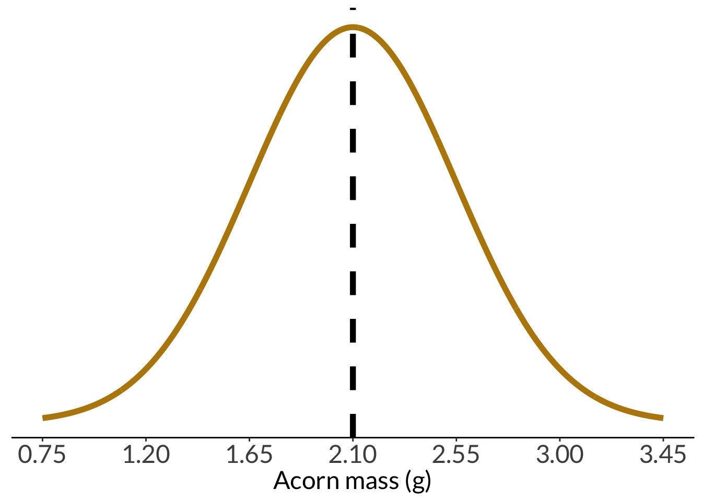

Code
set.seed(7)
leaf_pop <- rnorm(n = 10000, mean = 4.92, sd = 0.5)
leaves <- sample(leaf_pop, size = 20, replace = FALSE)\[ standard \: error = SE_{\bar{y}} = \frac{s}{\sqrt{n}} \]
\[ \begin{align} CI = estimate \: &\pm \: margin \: of \: error \\ CI = \bar{y} \: &\pm \: t_{\alpha(2), df} \times \frac{s}{\sqrt{n}} \\ CI = \bar{y} \: &\pm \: z_{\alpha/2} \times \frac{\sigma}{\sqrt{n}} \end{align} \]
\[ t_{\alpha(2), df} \]
\[ t_{0.05(2), 19} \]
\[ z = \frac{\bar{y} - \mu}{\sigma - \sqrt{n}} \]
This is the leaf example from lecture.
This generates the “population”: 10000 trees.
set.seed(7)
leaf_pop <- rnorm(n = 10000, mean = 4.92, sd = 0.5)
leaves <- sample(leaf_pop, size = 20, replace = FALSE)# population histogram
enframe(leaf_pop) %>%
ggplot(aes(x = value)) +
geom_histogram(fill = "darkgreen",
color = "darkgreen",
alpha = 0.8) +
geom_vline(xintercept = mean(leaf_pop),
linetype = 2,
linewidth = 2) +
scale_y_continuous(expand = c(0, 0)) +
labs(x = "Leaf length (cm)",
y = "Count") +
theme(axis.title.y = element_blank(),
axis.text.y = element_blank(),
axis.ticks.y = element_blank(),
axis.line.y = element_blank())
breakpoints <- round(seq(from = min(leaves), to = max(leaves), length.out = 7), 2)
hist <- enframe(leaves) %>%
ggplot(aes(x = value)) +
geom_histogram(bins = 7, fill = "cornflowerblue", color = "#000000", breaks = breakpoints) +
scale_x_continuous(breaks = breakpoints) +
scale_y_continuous(expand = c(0, 0), limits = c(0, 6), breaks = c(0, 1, 2, 3, 4, 5, 6)) +
theme_classic() +
labs(x = "Leaf length (cm)", y = "Count")
hist
enframe(leaves) %>%
ggplot(aes(x = value)) +
geom_density(fill = "cornflowerblue", color = "#000000", linewidth = 1) +
scale_x_continuous(limits = c(2.5, 7)) +
scale_y_continuous(expand = c(0, 0), limits = c(0, 0.65)) +
geom_vline(xintercept = mean(leaves)) +
annotate("text", x = 6, y = 0.6, label = "sample mean = 4.84 cm", size = 6) +
theme_classic() +
labs(x = "Leaf length (cm)",
y = "Density")
leaf_conflev <- tribble(
~ conflev,
0.85,
0.90,
0.95,
0.99
) %>%
mutate(lower = case_when(
conflev == 0.85 ~ mean(leaves) - -qt(p = 0.15/2, df = 19)*sd(leaves)/sqrt(length(leaves)),
conflev == 0.90 ~ mean(leaves) - -qt(p = 0.1/2, df = 19)*sd(leaves)/sqrt(length(leaves)),
conflev == 0.95 ~ mean(leaves) - -qt(p = 0.05/2, df = 19)*sd(leaves)/sqrt(length(leaves)),
conflev == 0.99 ~ mean(leaves) - -qt(p = 0.01/2, df = 19)*sd(leaves)/sqrt(length(leaves))
),
upper = case_when(
conflev == 0.85 ~ mean(leaves) + -qt(p = 0.15/2, df = 19)*sd(leaves)/sqrt(length(leaves)),
conflev == 0.90 ~ mean(leaves) + -qt(p = 0.1/2, df = 19)*sd(leaves)/sqrt(length(leaves)),
conflev == 0.95 ~ mean(leaves) + -qt(p = 0.05/2, df = 19)*sd(leaves)/sqrt(length(leaves)),
conflev == 0.99 ~ mean(leaves) + -qt(p = 0.01/2, df = 19)*sd(leaves)/sqrt(length(leaves))
)) %>%
mutate(mean = mean(leaves))
# se <- s/sqrt(n)
ggplot() +
geom_point(data = enframe(leaves), aes(x = 0.84, y = leaves),
alpha = 0.6, shape = 21) +
geom_point(data = enframe(leaves), aes(x = 0.89, y = leaves),
alpha = 0.6, shape = 21) +
geom_point(data = enframe(leaves), aes(x = 0.94, y = leaves),
alpha = 0.6, shape = 21) +
geom_point(data = enframe(leaves), aes(x = 0.98, y = leaves),
alpha = 0.6, shape = 21) +
geom_point(data = leaf_conflev, aes(x = conflev, y = mean),
size = 3,
color = "cornflowerblue") +
geom_errorbar(data = leaf_conflev, aes(x = conflev, y = mean, ymin = lower, ymax = upper),
width = 0.006,
linewidth = 1,
color = "cornflowerblue") +
theme_void() +
theme(panel.grid = element_blank()) +
labs(x = "Confidence levels",
y = "Leaf length (cm)") 
qq <- enframe(leaves) %>%
ggplot(aes(sample = value)) +
stat_qq_line(aes(sample = value)) +
stat_qq(aes(sample = value), color = "cornflowerblue", size = 3) +
theme_classic() +
labs(x = "Theoretical quantiles", y = "Sample quantiles")hist + qq
leaf_5 <- rep(NA, length = 1000)
leaf_20 <- rep(NA, length = 1000)
leaf_40 <- rep(NA, length = 1000)
leaf_20_sd <- rep(NA, length = 1000)
# sample 5 leaves from population 1000x
for(i in 1:1000) {
# sample 5 leaves from population
sample_5 <- sample(leaf_pop, size = 5, replace = FALSE)
sample_20 <- sample(leaf_pop, size = 20, replace = FALSE)
sample_40 <- sample(leaf_pop, size = 40, replace = FALSE)
leaf_5[i] <- mean(sample_5)
leaf_20[i] <- mean(sample_20)
leaf_40[i] <- mean(sample_40)
leaf_20_sd[i] <- sd(sample_20)
}
leaf_df <- cbind(leaf_5, leaf_20, leaf_40) %>%
as_tibble() %>%
pivot_longer(cols = 1:3) %>%
mutate(name = case_when(
name == "leaf_5" ~ "n = 5",
name == "leaf_20" ~ "n = 20",
name == "leaf_40" ~ "n = 40"
),
name = fct_relevel(name, "n = 5", "n = 20", "n = 40"))
leaf_df %>%
filter(name == "n = 20") %>%
ggplot() +
geom_histogram(aes(x = value),
color = "cornflowerblue",
fill = "cornflowerblue",
alpha = 0.8) +
geom_vline(xintercept = mean(leaf_pop),
linetype = 2,
linewidth = 2) +
scale_y_continuous(expand = c(0, 0), limits = c(0, 280)) +
theme(axis.title.y = element_blank(),
axis.text.y = element_blank(),
axis.ticks.y = element_blank(),
axis.line.y = element_blank(),
strip.text = element_text(size = 18)) +
labs(x = "Mean leaf length (cm)") +
facet_wrap(~name, ncol = 1) 
ggplot(leaf_df) +
geom_histogram(aes(x = value),
color = "cornflowerblue",
fill = "cornflowerblue",
alpha = 0.8) +
geom_vline(xintercept = mean(leaf_pop),
linetype = 2,
linewidth = 2) +
scale_y_continuous(expand = c(0, 0), limits = c(0, 280)) +
theme(axis.title.y = element_blank(),
axis.text.y = element_blank(),
axis.line.y = element_blank(),
axis.ticks.y = element_blank(),
strip.text = element_text(size = 18)) +
labs(x = "Mean leaf length (cm)") +
facet_wrap(~name, ncol = 1) 
leaf_20_ci <- cbind(leaf_20, leaf_20_sd) %>%
as_tibble() %>%
mutate(ci_low = leaf_20 - -qt(p = 0.05/2, df = 19)*leaf_20_sd/sqrt(20),
ci_high = leaf_20 + -qt(p = 0.05/2, df = 19)*leaf_20_sd/sqrt(20),
iter = rownames(.)) %>%
mutate(color = case_when(
ci_low <= mean(leaf_pop) & ci_high >= mean(leaf_pop) ~ "yes",
TRUE ~ "no"
),
color = fct_relevel(color, "yes", "no"))
# selecting 8 resamples to plot
leaf_20_ci_sample <- leaf_20_ci %>%
group_by(color) %>%
sample_n(4) %>%
ungroup() %>%
mutate(iter = fct_inorder(iter))
leaf_20_ci_sample# A tibble: 8 × 6
leaf_20 leaf_20_sd ci_low ci_high iter color
<dbl> <dbl> <dbl> <dbl> <fct> <fct>
1 4.90 0.429 4.70 5.10 158 yes
2 4.86 0.443 4.66 5.07 108 yes
3 4.97 0.429 4.77 5.17 712 yes
4 4.75 0.459 4.53 4.96 298 yes
5 4.71 0.432 4.51 4.91 500 no
6 4.75 0.369 4.58 4.92 983 no
7 5.28 0.483 5.06 5.51 824 no
8 5.22 0.450 5.00 5.43 973 no ggplot(data = leaf_20_ci_sample, aes(x = leaf_20, y = iter, color = color)) +
geom_vline(xintercept = mean(leaf_pop),
lty = 2) +
geom_pointrange(aes(xmin = ci_low, xmax = ci_high)) +
scale_color_manual(values = c("yes" = "darkgreen", "no" = "orange")) +
scale_x_continuous(limits = c(mean(leaf_pop)*0.85, mean(leaf_pop)*1.15)) +
scale_y_discrete(limits = rev) +
theme(axis.title.y = element_blank(),
axis.line.y = element_blank(),
axis.text.y = element_blank(),
axis.ticks.y = element_blank()) +
theme(legend.position = "none") +
labs(x = "Leaf length (cm)")
enframe(leaves) %>%
mutate(group = "Sample") %>%
ggplot(aes(x = group, y = value)) +
geom_point(position = position_jitter(width = 0.2, height = 0, seed = 1),
shape = 21,
alpha = 0.8) +
geom_point(aes(x = group, y = mean(value)),
color = "cornflowerblue",
size = 4) +
geom_errorbar(aes(ymin = mean(value) - sd(value)/sqrt(20),
ymax = mean(value) + sd(value)/sqrt(20),
width = 0.2),
color = "cornflowerblue",
linewidth = 1) +
labs(y = "Leaf length (cm)") +
theme(axis.title.x = element_blank())
Hmisc::smean.cl.normal(leaves) Mean Lower Upper
4.844110 4.578826 5.109393 ggplot2::mean_cl_normal(leaves) y ymin ymax
1 4.84411 4.578826 5.109393enframe(leaves) %>%
mutate(group = "Sample") %>%
ggplot() +
geom_point(aes(x = group, y = value),
position = position_jitter(width = 0.2, height = 0, seed = 1),
shape = 21,
alpha = 0.8) +
geom_point(aes(x = group, y = mean(value)),
color = "cornflowerblue",
size = 3) +
geom_errorbar(data = leaf_conflev %>% filter(conflev == 0.95) %>% mutate(group = "Sample"),
aes(x = group, ymin = lower, ymax = upper),
width = 0,
color = "cornflowerblue",
size = 1) +
geom_pointrange(data = data.frame(group = "Dry", mean = 3.2, lower = 3.0, upper = 3.4),
aes(x = group, y = mean, ymin = lower, ymax = upper),
color = "firebrick",
size = 1,
linewidth = 1) +
labs(y = "Leaf length (cm)") +
theme(axis.title.x = element_blank())
Example: You’re told that the mean weight of a coast live oak acorn is \(2.1 g\). You question that claim. You then choose to randomly sample 30 acorns and calculate the sample mean: \(\bar{y} = 2.6 g\). You also (miraculously) know the population standard deviation: \(\sigma = 0.3 g\).
Do you have evidence to refute this claim?
First, store some numbers:
acorn_mean <- 2.1
acorn_sd <- 0.45
sample_mean <- 2.2Plotting the acorn population distribution:
min <- acorn_mean-(3*acorn_sd)
max <- acorn_mean+(3*acorn_sd)
acorn_pop_hist <- data.frame(x = min:max) %>%
ggplot(aes(x)) +
stat_function(geom = "line",
n = 1000,
fun = dnorm,
args = list(mean = acorn_mean, sd = acorn_sd),
linewidth = 2,
color = "darkgoldenrod") +
geom_vline(xintercept = acorn_mean,
linetype = 2,
linewidth = 2) +
scale_x_continuous(breaks = c(acorn_mean-3*acorn_sd,
acorn_mean-2*acorn_sd,
acorn_mean-acorn_sd,
acorn_mean,
acorn_mean+acorn_sd,
acorn_mean+2*acorn_sd,
acorn_mean+3*acorn_sd),
limits = c(min, max)) +
labs(x = "Acorn mass (g)") +
theme(axis.title.y = element_blank(),
axis.text.y = element_blank(),
axis.ticks.y = element_blank(),
axis.line.y = element_blank())
acorn_pop_hist
And with the sample mean:
pop_with_sample <- acorn_pop_hist +
geom_vline(xintercept = sample_mean,
color = "tomato3",
linewidth = 2)
pop_with_sample
And with a sample mean at least that different:
pop_with_sample +
geom_vline(xintercept = acorn_mean - (sample_mean - acorn_mean),
color = "tomato3",
linewidth = 2)
We can calculate a z-score using the formula:
\[ \begin{align} z &= \frac{\bar{y} - \mu}{\sigma/\sqrt{n}} \\ &= \frac{2.2 - 2.10}{0.45/\sqrt{30}} \\ &= 1.22 \end{align} \]
In this version of the z-score formula, the number of observations \(n\) is included; technically, the one from before also included \(n\), but since we were only choosing one individual and asking about the probability of selecting that individual, \(\sqrt{n} = 1\) so it cancelled out.
acorn_z <- (sample_mean - acorn_mean)/(acorn_sd/sqrt(30))
acorn_z[1] 1.217161pnorm(acorn_z, mean = 0, sd = 1, lower.tail = FALSE)[1] 0.1117714We can plot the z-scores against each other:
data.frame(x = -3:3) %>%
ggplot(aes(x)) +
stat_function(geom = "area",
fun = dnorm,
args = list(mean = 0, sd = 1),
xlim = c(1.96, 3),
fill = "lightgrey") +
stat_function(geom = "area",
fun = dnorm,
args = list(mean = 0, sd = 1),
xlim = c(-3, -1.96),
fill = "lightgrey") +
geom_linerange(x = 1.96, ymin = 0, ymax = 0.06) +
geom_linerange(x = -1.96, ymin = 0, ymax = 0.06) +
geom_linerange(x = acorn_z, linetype = 2, linewidth = 2,
ymin = 0, ymax = 0.18) +
geom_linerange(x = -acorn_z, linetype = 2, linewidth = 2,
ymin = 0, ymax = 0.18) +
stat_function(geom = "line",
n = 1000,
fun = dnorm,
args = list(mean = 0, sd = 1),
linewidth = 2,
color = "darkgoldenrod") +
scale_x_continuous(breaks = seq(-3, 3, by = 1)) +
scale_y_continuous(expand = c(0, 0),
limits = c(0, 0.45)) +
theme(axis.title.y = element_blank(),
axis.text.y = element_blank(),
axis.ticks.y = element_blank(),
axis.line.y = element_blank()) +
labs(x = "Z")
In a one-tailed test (directional, greater or lesser), all the significance is in one tail of the distribution. In a two-tailed test (not directional, different from), the significance is split between two tails of the distribution.
two <- ggplot(data.frame(x = -5:5), aes(x)) +
stat_function(geom = "area", fun = dt, args = list(df = 1), xlim = c(3, 5), fill = "darkgrey") +
geom_linerange(aes(x = 3, ymin = 0, ymax = 0.032), linewidth = 1, lty = 2, color = "#000000") +
stat_function(geom = "area", fun = dt, args = list(df = 1), xlim = c(-5, -3), fill = "darkgrey") +
geom_linerange(aes(x = -3, ymin = 0, ymax = 0.032), linewidth = 1, lty = 2, color = "#000000") +
stat_function(geom = "line", n = 1000, fun = dt, args = list(df = 1), linewidth = 1, color = "#000000") +
scale_y_continuous(expand = c(0, 0), limits = c(0, 0.32)) +
theme_void() +
theme(panel.grid = element_blank())
one <- ggplot(data.frame(x = -5:5), aes(x)) +
stat_function(geom = "area", fun = dt, args = list(df = 1), xlim = c(2, 5), fill = "darkgrey") +
geom_linerange(aes(x = 2, ymin = 0, ymax = 0.063), linewidth = 1, lty = 2, color = "#000000") +
stat_function(geom = "line", n = 1000, fun = dt, args = list(df = 1), linewidth = 1, color = "#000000") +
scale_y_continuous(expand = c(0, 0), limits = c(0, 0.32)) +
theme_void() +
theme(panel.grid = element_blank())
one + two
@online{bui2025,
author = {Bui, An},
title = {Week 2 Figures - {Lectures} 3 and 4},
date = {2025-04-07},
url = {https://spring-2025.envs-193ds.com/lecture/lecture_week-02.html},
langid = {en}
}